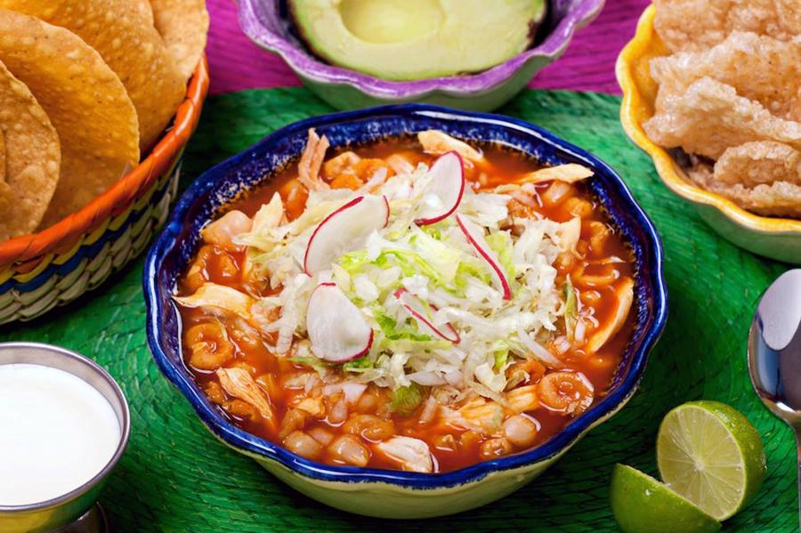
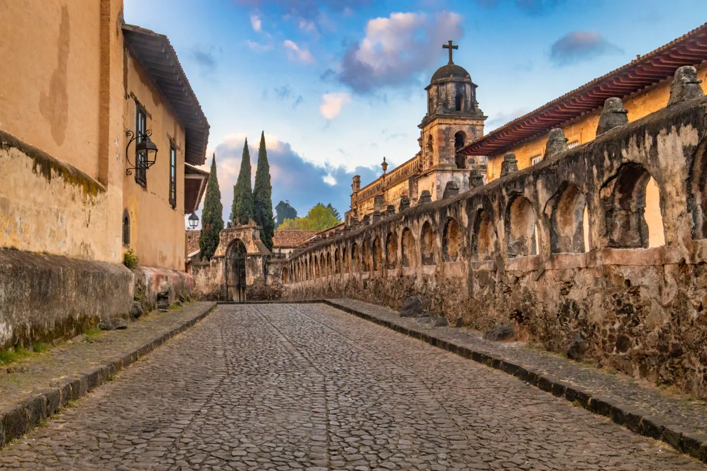

Una de las comidas más famosas y representativas del estado de Michoacán, México, es la "Pozole". El pozole es un guiso tradicional mexicano que se prepara a base de maíz cacahuazintle (tipo de maíz grande y moteado), carne (generalmente de cerdo, aunque también puede ser de pollo o res) y condimentos. Se cocina lentamente hasta que el maíz esté tierno y se sazona con una mezcla de chiles, hierbas y especias.El pozole se sirve caliente y se acompaña con una variedad de ingredientes frescos y aderezos, como lechuga, rábano, cebolla, orégano, limón y salsa picante. Es un plato reconfortante, sabroso y nutritivo que se disfruta ampliamente en Michoacán y en todo México, especialmente durante celebraciones y festividades.

Uno de los lugares más famosos y reconocidos en el estado de Michoacán es el pueblo mágico de Pátzcuaro. Pátzcuaro es una pintoresca ciudad colonial ubicada en la región del lago de Pátzcuaro, conocida por su arquitectura colonial bien conservada, sus tradiciones culturales y su belleza natural.

Notas relevantes:
Un dato curioso sobre Michoacán es que es el
único estado en México donde se sigue practicando la antigua tradición
de la elaboración de hojas de maíz pintadas a mano, conocidas como
"hojalata". Esta tradición se remonta a la época colonial y se centra
principalmente en los pueblos de Pátzcuaro, Santa Clara del Cobre y
Cuanajo.
La hojalata es un arte popular en el que se decoran las hojas de
maíz secas con diseños coloridos y detallados, utilizando pinturas
hechas a base de pigmentos naturales. Estas hojas pintadas se utilizan
tradicionalmente como ofrendas en celebraciones religiosas,
especialmente en el Día de los Muertos, así como para la decoración de
interiores y exteriores.